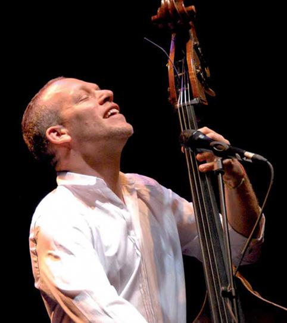

Eventi - Un'isola colta
La buona vita richiede un buon intorno, e Minorca lo possiede. La buona vita esige una gastronomia di qualità, e Minorca la possiede. E la buona vita obbliga ad avere un cervello attivo con una intensa attività culturale, e Minorca possiede anche questo.
Un'isola che non raggiunge i 100.000 abitanti genera una quantità di atti che neanche potete immaginare, e che si intensificano durante l'estate. Senza dubbio, durante la vostra permanenza in quest'isola avrete l'occasione di assistere ad alcuni di essi.
Per cominciare, questo piccolo pezzo di terra conta con il teatro dell'opera più antico di Spagna, il Principale di Mahon. Uno spazio modernizzato capace di accogliere una gran varietà di arti sceniche e con una amplia programmazione ben oltre quella delle rappresentazioni operistiche. Sicuramente troverete quella che più vi piace.
Sempre a Mahon troverete un altro gioiello, l'organo della chiesa di Santa Maria, con più di 200 anni di storia. Periodicamente si programmano concerti che vi permetteranno scoprire che il passo del tempo non ha arruginito questo strumento, ma al contrario, come passa anche per i migliori vini.
Durante l'estate, tanto a Mahon come a Ciuttadella si organizzano festival musicali di grande livello. Li organizzano le Gioventù Musicali di queste due città, e permettono combinare lo scenario perfetto quale è Minorca con le melodie più affascinanti.
 E se preferite un altro tipo di musica, sappiate che d'estate l'isola si riempie di concerti di diversi formati, da attuazioni di dimensioni ridotte fino ad attuazioni di maggiore scala. Potrete trovare un concerto in un angolo della città o in un campo di calcio. Consultate la programmazione per poter scegliere con garanzia.
E se preferite un altro tipo di musica, sappiate che d'estate l'isola si riempie di concerti di diversi formati, da attuazioni di dimensioni ridotte fino ad attuazioni di maggiore scala. Potrete trovare un concerto in un angolo della città o in un campo di calcio. Consultate la programmazione per poter scegliere con garanzia.
Generazione dopo generazione, i minorchini hanno saputo coltivare le loro tradizioni, e al giorno d'oggi si conservano soprattutto due espressioni che sono segno di identità di questa isola. Da un lato, i ballerini folkloristici, basati nelle canzoni popolari dell'isola, e dall'altro, le “gloses”. Quest'ultima è una disciplina tremendamente complicata, che richiede una grande agilità mentale da parte di chi la pratica, i “glosadors”. Consiste in un dialogo tra varie persone, che con una stessa melodia, dialogano con l'obbligo di che i loro versi siano in rima in modo molto concreto e conservino una metrica determinata. I “glosadors” sono veri maestri delle parole. Attuano in catalano, e vale la pena osservarli.
Se vi piace l'arte, passeggiate tra le diverse gallerie dell'isola, o visitate le esposizioni che vengono programmate nei diversi spazi pubblici dedicati abquesti fini. Non perdetevi le creazioni degli artisti locali. Molti di loro hanno varcato le frontiere, però senza perdere le loro radici. Minorca rimane sempre nel cuore.
Vedete, se volete scoprire la cultura minorchina, avete multiple opzioni per scoprirla. Ricordatevi che un'isola non è solo un pezzo di terra. Minorca non sarebbe quello che è senza la sua cultura. Datele un'occhiata. E godetevela...